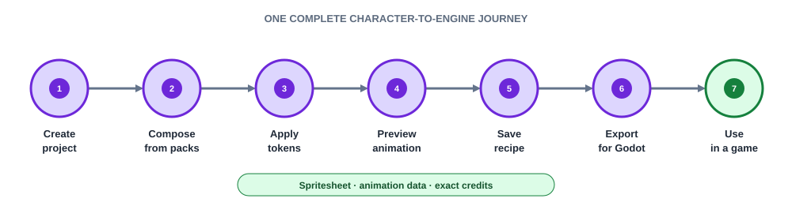

Local projects
Create, rename, save, reopen, and deterministically rebuild a project containing multiple character recipes and one shared theme.
Build now · MVP
A project-based, pack-driven LPC character generator that takes a developer from composition to a reproducible, game-ready export with complete attribution.
The scope rule
Include a capability only when it is required to complete the character-to-engine journey or to prove a shared contract needed by the North Star.

The first user is a solo or small-team developer without a dedicated pixel artist who needs coherent animated characters quickly, wants legally usable output, and is willing to use the LPC visual style. Godot is the first engine target so the product can validate an engine-ready handoff rather than stop at a generic PNG.
Create, rename, save, reopen, and deterministically rebuild a project containing multiple character recipes and one shared theme.
One curated starter pack, loaded through a versioned manifest rather than embedded in UI code. A second test pack must load without renderer changes.
One humanoid body type with skin, hair, headwear, torso, legs, feet, and a small tool or weapon selection. Pack data controls compatibility and draw order.
Idle and walk in four directions, with play, pause, direction, speed, pixel-perfect zoom, and clear animation-coverage warnings.
A small semantic set for skin, hair, primary and secondary cloth, leather, and metal, supporting a project theme plus per-character overrides.
Recipes store stable asset references and token choices, not rendered pixels, so the same project and pack versions produce the same result.
Generic PNG plus animation JSON, and a Godot-oriented export that removes manual frame slicing. Engine details remain outside the renderer.
Every source layer carries author, source, and license metadata. Export computes human-readable and machine-readable credits from the selected assets.
Only contracts with a demonstrated role in both the MVP and the long-term product are generalized.
| Foundation | MVP use | Later extension |
|---|---|---|
| Versioned project | Contains character recipes and a theme | Adds terrain, props, and scenes |
| Pack manifest | Describes character layers and licenses | Describes biome, structure, and community packs |
| Shared asset identity | References selected sprite layers | References every generated or imported asset |
| Animation descriptor | Idle and walk frame cycles | Animated terrain, props, effects, and authored motion |
| Token resolver | Recolors character regions | Rethemes complete worlds |
| Provenance model | Generates character credits | Merges attribution across a whole project |
| Headless renderer | Composes and recolors character frames | Supports CLI, automation, and additional producers |
| Export adapter | Emits generic and Godot output | Adds Unity, live-link, and pipeline targets |
Terrain generation, structures and props, scene composition, manual pixel editing, animation authoring, mounts and creatures, material maps, user-facing pack creation, a marketplace, Unity integration, live sync, CLI/API access, cloud accounts, and collaboration remain outside the MVP.
Do not build a universal framework yet
Version the proven contracts, but wait for a second real producer to reveal what is genuinely shared. The MVP does not need a plugin runtime, node graph, generic scene editor, or speculative generator framework.
Create and compose
A new user creates a project and assembles a character from at least five content slots.
Theme and preview
They apply a shared theme, override one token, and preview idle and walk in four directions.
Save and reproduce
They close and reopen the project and receive the same rendered character.
Export and integrate
They export the character, animation metadata, and credits, then use it in Godot without manual slicing.
Prove extensibility
A second test pack loads without changing the renderer or composition code.
Next
Follow the delivery roadmap from the initial technical spike through user validation and the first post-MVP expansion.